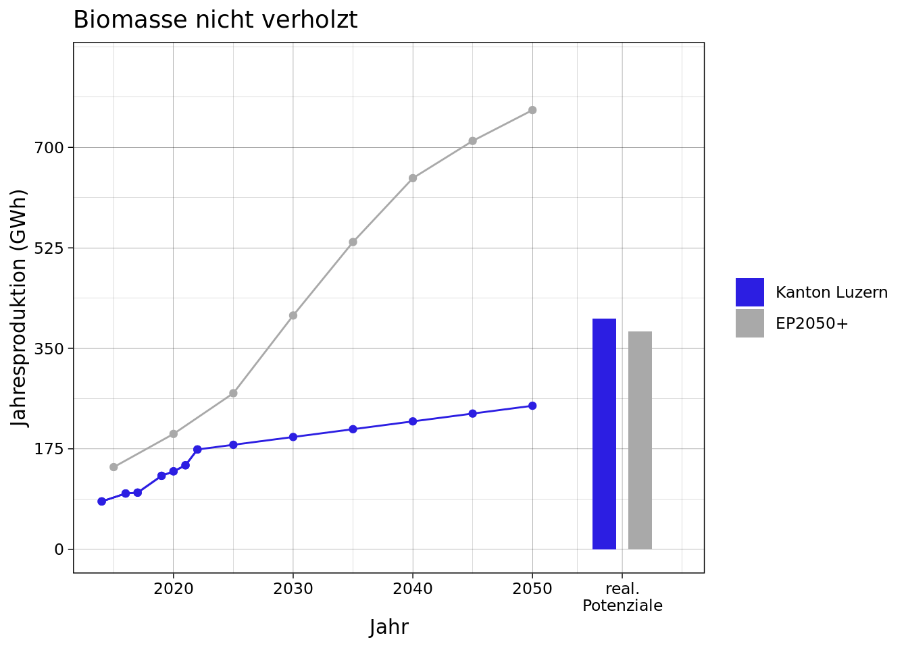

Potenziale der erneuerbaren Energieproduktion im Kanton Luzern
Biomasse nicht verholzt
braucht es hier noch einen check pronovo und holinger bzgl. der einbezogenen anlagen?Definition
Zur nicht verholzten Biomasse zählen Hofdünger (Gülle und Mist), landwirtschaftliche Nebenprodukte (z.B. Reststroh aus der Getreideproduktion), organische Abfälle aus Industrie und Gewerbe, organische Abfälle im Haushaltskehricht, Grüngut aus Haushalt und Landschaft sowie Klärschlamm. Die Rohstoffkategorien ohne Hofdünger werden auch als Co-Substrate bezeichnet und sind energetisch ergiebiger als Hofdünger. Nicht verholzte Biomassen werden durch Vergärung Biogas umgewandelt. Biogas ist ein Gemisch, das zu rund zwei Dritteln aus Methan und zu einem Drittel aus Kohlendioxid besteht. Biogas kann gereinigt und aufbereitet in das Erdgasnetz eingespeist werden oder in Blockheizkraftwerken zur Strom- und Wärmegewinnung genutzt werden.
Aktuelle Produktion ( GWh)
Im Kanton Luzern gibt es insgesamt 32 Anlagen (Abbildung 2), welche Biogas energetisch verwerten: 13 Abwasserreinigungsanlagen, 6 industrielle Anlagen und 13 landwirtschaftliche Co-Vergärungsanlagen. Alle Anlagen produzieren mittels Blockheizkraftwerk Strom und Wärme, nur zwei speisen Biogas zusätzlich in das Gasnetz ein1. Die Stromproduktion aller Biogasanlagen im Jahr 2022 betrug 58 GWh2. Die aus dieser Stromproduktion abgeschätzte genutzte Waerme beträgt 81 GWh3. Insgesamt resultieren 139 GWh Strom und Wärme. Die direkt ins Gasnetz eingespeiste Energiemenge beträgt 35 GWh4. In der Summe ist die aktuelle Nutzung somit 174 GWh5.
Theoretisches Potenzial (840 GWh)
In Kanton Luzern (2013) wird das theoretische Potenzial von Biogas mit 854 GWh angeben. In Thees u. a. (2017) wird das theoretische Potenzial mit 817 GWh beziffert. Es wird der Mittelwert von 840 GWh übernommen.
Realistisches Potenzial (400 GWh)
In Kanton Luzern (2013) wird das realistische Potenzial mit GWh angegeben. Aus Thees u. a. (2017) ergibt sich ein realistisches Potenzial von 490 GWh. Als Arbeitswert wird hier ein Mittelwert von 400 GWh angenommen. Inwieweit dieser Arbeitswert wirklich nutzbar ist, hängt stark von der Nutzbarmachung des Hofdüngers ab, welcher energetisch etwa 75 % des realistischen Potenzials ausmacht6. Auf die Menge bezogen macht der Hofdünger sogar 96 % der verwendeten Biomasse aus.
Aus fachlicher Sicht empfohlenes Ausbauziel für 2050 (250 GWh)
Das Ausbauziel hängt stark von der Nutzbarmachung des Hofdüngers ab. Hofdünger hat gegenüber Co-Substraten (z.B. organische Abfälle, Glycerin) eine geringere Energiedichte (Energie pro kg). Wo das Ausbauziel zwischen dem genutzten Potenzial von 170 GWh und dem realistischen Potenzial von 400 GWh zu positionieren ist, bedarf einer Interessenabwägung. Für ein hohes Ausbauziel sprechen die gesteigerte Nachfrage nach erneuerbarem und speicherbarem Gas für Hochtemperaturprozesse7, eine weniger starke Abhängigkeit von Importgasen (Wasserstoff, Biogas), die Entlastung des Rohstoffes Holz sowie die Reduktion von Treibhausgasemissionen8. Tendenziell fördert vergorene Gülle (im Vergleich zum Ausbringen unvergorener Gülle), trotz dem geringeren Kohlenstoffgehalt9, zusätzlich die Humusbildung. Für ein konservatives Ausbauziel sprechen die geringe Wirtschaftlichkeit der Energieproduktion aus Hofdünger alleine (und damit die Abhängigkeit von hohen Fördergeldern) und die langen Transportwege der Co-Substrate (zum Teil aus dem Ausland) und des rückgeführten Düngers nach der Vergärung. Vergorene Gülle hat (im Vergleich zu unvergorener Gülle) ausserdem in der Regel eine erhöhten Ammoniumgehalt. Das damit verbundene erhöhte Auswaschrisiko von Stickstoff kann zu einer Verschmutzung des Grundwassers führen. Gemäss PB K&E die landwirtschaftlichen Treibhausgasemissionen bis 2050 halbiert werden. Dafür ist eine Reduktion des Tierbestands und eine klimaschonende Ernährung nötig (Massnahme KS-L2.2 des PB K&E). Dies reduziert die Menge an verfügbarem Hofdünger und somit das realistische Potenzial. Als Arbeitswert wird ein Ausbauziel von 250 GWh gewählt. Dabei wird davon ausgegangen, dass kleine landwirtschaftliche Anlagen mithilfe von Förderung und technischen Fortschritten in Zukunft zumindest teilweise wirtschaftlich betrieben werden können. Das skalierte Bundesziel ist um ein Dreifaches höher und sogar höher als das realistische Potenzial. Dies ist auf importiertes Biogas zurückzuführen, welches in den Daten der EP2050+ nicht von der Inlandproduktion zu trennen ist.
Anhang A1: Biogasanlagen
Literatur
Holinger AG. (2022). Biogas im Kanton Luzern.
Kanton Luzern. (2013). Strategie Biogasanlagen im Kanton Luzern.
Thees, O., Burg, V., Erni, M., Bowman, G., & Lemm, R. (2017). Biomassenpotenziale der Schweiz für die energetische Nutzung. Heft (Bd. 57).
Fußnoten
ARA Buholz und SwissFamerPowerInwil↩︎
Pronovo Daten, d.h. ohne Eigenbedarf↩︎
Annahmen: Strom und Wärmeproduktion stehen im Verhältnis 35:65 und 75 % der produzierten Wärme werden genutzt↩︎
ARA Buholz 6.8 GWh/Jahr (Tab. 21 in Holinger AG, 2022) und SFPI 28 GWh/Jahr (Tab. 21 in Holinger AG, 2022)↩︎
Die Studie Holinger AG (2022) analysiert Einzelanlagen und die aufsummierte Gesamtenergie ergibt 151 GWh. Der Unterschied zum angegebenen Wert von 174 GWh zeigt die Unsicherheit der Abschätzungen aufgrund unterschiedlicher Methodiken.↩︎
Kanton Luzern (2013): Hofdüngeranteil 80 %; Thees u. a. (2017): Hofdüngeranteil 71 %↩︎
Eine entsprechende Aufbereitung des Biogases wird vorausgesetzt.↩︎
Treibhausgassemissionen können mit Hilfe von Biogasanlagen über folgende Wirkungspfade eingespart werden: (i) Umwandlung vom stark klimaschädlichen Methan, welches bei der Hofdüngerlagerung freigesetzt würde, zum weniger klimaschädlichen CO2 bei der Verbrennung, siehe hierzu auch das Kompensationsprogramm des Bundes Methanvermeidung aus biogenenen Abfällen (ii) Substitution fossiler Brenn- und Treibstoffe durch Biogas, (iii) die Substitution von Mineraldüngern aus fossiler Energiequelle durch organische Dünger.↩︎
Bei der Vergärung von Hofdüngern entsteht Methan. Der darin enthaltene Kohlenstoff gelangt als CO2 in die Atmosphäre und wird nicht mehr dem Boden zugeführt.↩︎